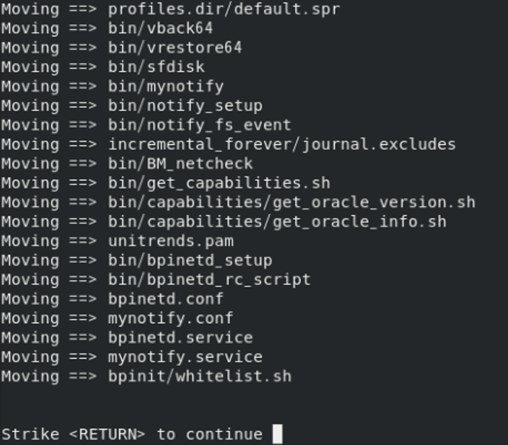
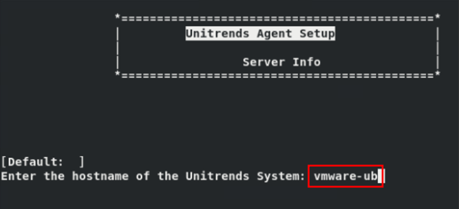
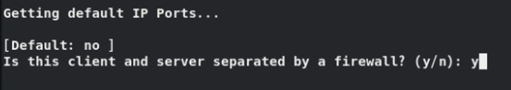

Linux 에이전트 설치¶
Unitrends는 CentOS, Debian, Red Hat, SUSE, Ubuntu를 포함한 대부분의 Linux 배포판을 지원합니다.
Unitrends 어플라이언스에 Linux 자산을 추가하려면 먼저 에이전트를 설치해야 합니다.
1. 보안 페어링 요구사항¶
Linux 에이전트 10.7.5버전부터, Unitrends 어플라이언스와 백업 대상 시스템의 Linux 에이전트 간 보안 페어링이 자동으로 설정됩니다.
이 페어링은 Transport Layer Security(TLS)를 통해 데이터를 암호화하고, 어플라이언스와 에이전트 간의 연결을 인증합니다. 페어링된 인증서가 없으면 어플라이언스와 에이전트 간 통신은 차단됩니다.
이 기능은 승인되지 않은 어플라이언스(예: 악성 코드 또는 허가되지 않은 백업 시도)가 에이전트와 통신하는 것을 방지하여 보안을 강화합니다.
① 어플라이언스 및 에이전트 버전:
Unitrends 어플라이언스와 Linux 대상 시스템은 10.7.5 이상의 버전을 실행해야 합니다.
Unitrends 어플라이언스 버전은 Linux 에이전트 버전과 같거나 더 높아야 합니다.
② 업그레이드 순서:
Unitrends 어플라이언스를 먼저 업그레이드한 후, Linux 에이전트를 업그레이드하세요.
중요:
10.7.5 이상의 에이전트를 실행 중인 Linux 대상을 이전 버전의 Unitrends 어플라이언스에서 백업하려고 하면 작업이 실패합니다.
10.7.5 이상의 에이전트를 실행 중인 Linux 대상을 이전 버전의 Unitrends 어플라이언스에 추가하려고 하면 오류가 발생합니다.
오류메세지 예:
Failed to save client: Registration for client assetName failed.The Unitrends System could not connect to the Unitrends Agent on assetName.Please ensure that the Agent software is installed on assetName, the Agent service is running (if applicable), and no firewall settings are preventing access.
③ 포트 설정:
Linux 에이전트는 888/TCP 포트에서 페어링 요청을 수신합니다. Linux 대상 시스템에서 888/TCP 포트가 접근 가능해야 합니다.
④ 지원되는 Linux 버전:
아래에 나열된 지원 Linux 버전에서만 10.7.5 버전의 에이전트를 설치하세요.
지원 버전 목록:
Alma Linux 9, 64-bit
CentOS 7, 64-bit
CentOS 9, 64-bit
Debian 10, 64-bit
OpenSUSE 42, 64-bit
Oracle Linux 8.1, 64-bit
RHEL 7, 64-bit
RHEL 8.4, 64-bit
RHEL 9, 64-bit
Rocky Linux 9, 64-bit
SLES 11 SP3, 64-bit
SUSE 15, 64-bit
Ubuntu 22.04, 64-bit
2. Linux 에이전트 설치 단계¶
(1) 설치 프로그램을 다운로드합니다.
Unitrends 다운로드 페이지에서 Latest Agent Releases 섹션의 CNT install script를 클릭하여 설치 프로그램을 다운로드하세요.
설치 파일을 Unitrends 어플라이언스에 추가하려는 Linux 대상 시스템에 저장합니다.
(2) 터미널을 열고 root 사용자로 로그인합니다.
(3) 설치 파일이 저장된 디렉토리로 이동하여, 설치 파일에 실행 권한을 추가합니다.
설치 파일에 실행 권한을 추가합니다.:
chmod +x <file_name>
(4) 설치 프로그램을 실행합니다.
설치 프로그램이 32비트인지 64비트인지 확인한 후, 아래 명령어 중 하나를 실행합니다.:
32비트 설치 프로그램:
./lnx32_cnt64비트 설치 프로그램:
./lnx64_cnt
(5) 옵션값을 입력하여 에이전트 설치를 진행합니다.
a. y → Enter : 에이전트 설치 시작

b. Enter → Enter : 에이전트 파일 위치 확인
c. <Unitrends 어플라이언스의 호스트네임> → Enter : 정확한 호스트네임을 입력해야 합니다.

d. y → Enter : Unitrends 어플라이언스에서 1745/TCP를 데이터 포트로 사용하도록 지정합니다.

3. 설치 후 확인사항¶
(1) 설치 위치
에이전트 기본 설치 위치와 데몬 위치는 아래와 같습니다.
기본 설치 위치: /usr/bp
에이전트 데몬 위치: /usr/local/bin/bpinetd
(2) 데이터 포트 확인
에이전트 마스터 파일에 데이터 포트가 1745로 정상 지정되었는지 확인합니다.
에이전트 마스터 파일 위치:
/usr/bp/bpinetd/master.inidata = 1745로 입력되었는지 확인합니다.
(3) 에이전트 프로세스 확인
에이전트 설치가 정상적으로 완료되었다면, 에이전트 프로세스가 시작되었는지 확인하세요.
ps -ef | grep bpinetd